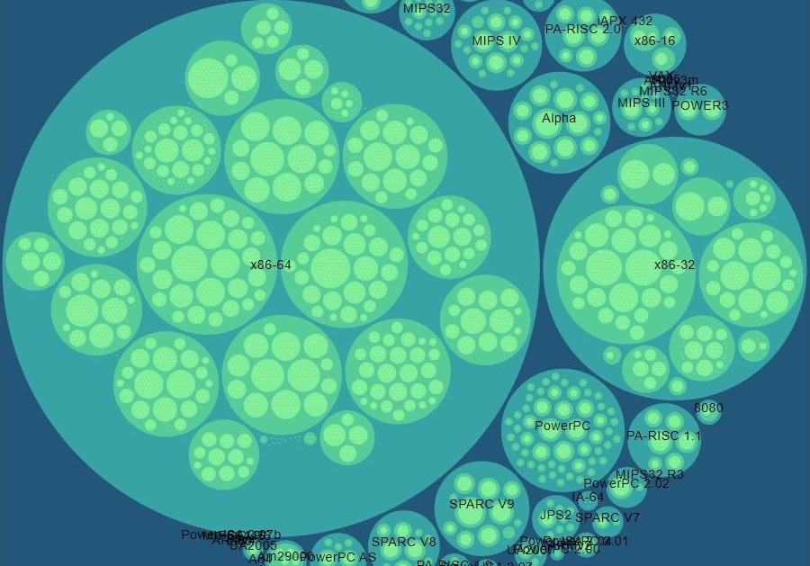

ASMR When You Hate Sounds
Do you hate sounds? Do you enjoy ASMR? Well it turns out they might be connected. ASMR When You Hate Sounds talks about about my experience with ASMR.
Get Out Episode by Scary Good Movies
Listen in on an interesting discussion of how the movie Get Out went against horror movie stereotypes and masterfully used the horror genre to confront racism.
Youtube Video
Fall is the perfect season to make handmade paper from recycled materials. Afterwords you can write beautiful letters to your close friends and family.

Research Group
I've been working with CSGenome for the past year and a half to collect and analyze computer system performance over time.